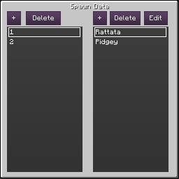
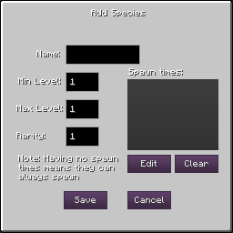
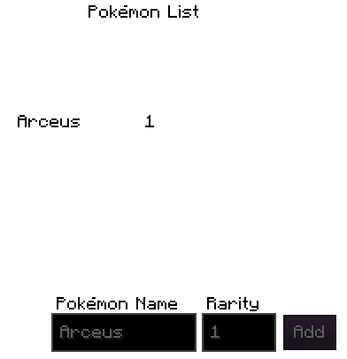

| Command name |
Command result |
| /pespawner |
Opens the Essentials spawner data menu. |
| /pespawner [x] [y] [z] |
If the block at the coordinates is a spawner, will open the spawner menu for you to edit its contents remotely. |
Pixelmon Essentials' spawners simplifies the job of placing Spawners by centralizing spawns in 1 location, and have the individual spawners read from those set values. Most routes usually have the same spawns, but spread through multiple areas, and this GUI will simplify your job significantly.

This is the first spawner GUI. This has the list of all the spawnset IDs, along with all of the spawns in it when you select it. As you can see, you can add a new ID by clicking the + on the left side, or delete one by clicking the button next to it.
You can add a new species to the ID by clicking the + button. You can also edit an existing one by selecting it and clicking the edit button. If you select either of the 2, you will be brought to the following GUI:

Here's what the different fields there mean:
Name: the species name
Min level: the minimum level that species can spawn in from that spawner.
Max level: the minimum level that species can spawn in from that spawner.
Rarity: The chance for this Pokémon to spawn. Chance to spawn is Rarity/Sum of rarities.
Spawn times: the times of the day that species spawns at that spawner id. Can be changed by using the edit and clear buttons. Can always spawn if left empty.
You've set your first spawn data id! Now, you might be wondering how you apply it on a spawner? Here's an example:

You simply set the Pokémon to spawn as Arceus, and you set the rarity to the spawn data ID associated with that number.
If for some reason you don't particularly like setting the spawn data through the in-game gui, you can also work on spawn data by using the external files, that you can find in the spawner folder of the pixelmon essentials directory.
Is that it for spawners?
Not quite. On top of everything shown above, there's also a functionality implemented in Pixelmon Essentials that keeps track of every spawner placed since installing the server, saving the dimension id, along with the coordinates of the spawner in the spawners.json file found in the pixelmon essentials data folder. If you're releasing your map publicly, I'd recommend removing that folder if you don't want people to know where everything spawns exactly.